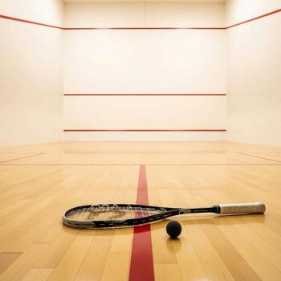

Tervetuloa Squash Ouluun
Oulun Squash Klubi (OSK) on vuonna 1976 perustettu oululainen squashseura. Seura tarjoaa squash-toimintaa kaikenikäisille ja -tasoisille pelaajille - aloittelijoista aktiiviharrastajiin ja kilpapelaajiin. Tervetuloa mukaan!
